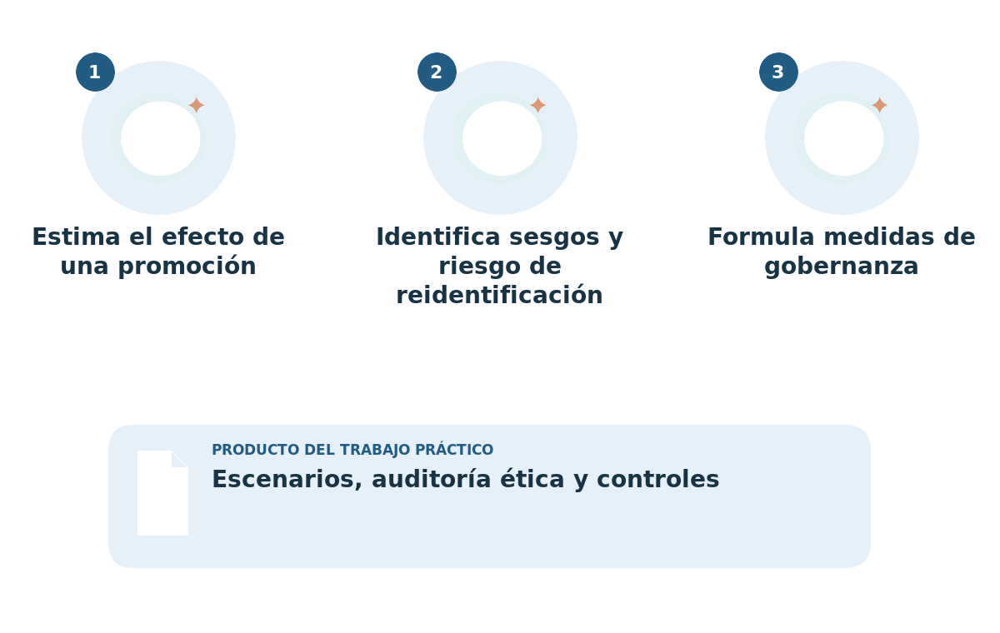

<div style="font-family: 'Segoe UI', Arial, sans-serif; color: #333; line-height: 1.6; max-width: 100%; margin-bottom: 20px;">
  <div style="background-color: #ffffff; background-image: linear-gradient(135deg, #ffffff 0%, #f8f9fa 100%); border: 1px solid #dee2e6; border-radius: 15px; padding: 25px 30px; box-shadow: 0 4px 12px rgba(0,0,0,0.05); position: relative; overflow: hidden;">
    <div style="position: absolute; left: 0; top: 0; bottom: 0; width: 6px; background: #0056b3;" aria-hidden="true"> </div>
    <div style="position: relative; z-index: 1;">
<h2 style="color: #1c3055; margin-top: 0; font-size: 1.4rem; font-weight: bold;">Entrega del Trabajo Práctico-Experimental de la Unidad 4</h2>
<p></p>

<p><strong>Asignatura:</strong> IA aplicada al análisis de datos y soporte a la decisión<br>
<strong>Actividad: Propuesta de promociones y revisión de riesgos</strong><br><strong>Evidencia:</strong> Un expediente con tres escenarios de promoción, la revisión de riesgos y las responsabilidades de control.</p>
<p>Un asesor de AndesMulti compartió nombres de compradores con un asistente externo. Recibió tres propuestas: retirar promociones de Loja y Ambato por vender menos, descontar 20 % en electrónica y hogar sin calcular el margen y enviar mensajes sin pedir permiso. Revisa estas propuestas con los datos ficticios de las unidades anteriores.</p>
<p><strong>Qué completar</strong></p>
<ol><li>Compara tres escenarios: conservador, moderado y ambicioso. Calcula descuentos, costos y necesidades de inventario. Puedes probar descuentos de 5 % a 10 % o un envío bonificado, en lugar de aplicar 20 % a todos. Anota tus supuestos y cuándo detendrías cada promoción.</li><li>Recomienda qué clientes, canal o producto priorizar. Define una meta medible y demuestra con las cifras corregidas por qué la propuesta es viable.</li><li>Compara el número de ventas y el promedio de compra de Loja y Ambato. Revisa cómo afectarían V028 y V052 si se trataran mal. Explica por qué 100 registros ficticios no representan a todo el comercio del país.</li><li>Propón al menos cuatro cuidados para los datos: retirar identificadores personales, usar solo campos necesarios, comprobar que no se pueda reconocer a alguien al cruzar datos y pedir permiso para las campañas.</li><li>Indica quién debe aprobar precios, cambios de atención por ciudad y mensajes masivos. Define una señal numérica para detener la campaña y cómo corregir errores.</li><li>Reúne los cálculos y la revisión de riesgos. Declara qué asistente y consultas usaste, confirma la comprobación humana y cita a Crawford, Etesse y Juca-Maldonado. Explica qué aprendiste sobre comparar ciudades y cuidar los datos.</li></ol>
<p><strong>Cómo entregar</strong></p>
<p>Entrega tu trabajo una sola vez al cierre de la semana 8. En esta Tarea de Moodle, selecciona <strong>Agregar entrega</strong>, adjunta tu evidencia y pulsa <strong>Guardar cambios</strong>. Si aparece <strong>Enviar tarea</strong>, púlsalo y comprueba el estado.</p>
<p><strong>Nombre del expediente:</strong> Apellido_Nombre_Trabajo_experimental_Unidad_4.</p>
<p><strong>Formato:</strong> Entrega un informe y la hoja de cálculo editable de los escenarios dentro de la misma entrega.</p>
<p>Conserva el registro original del caso y anota las correcciones en tu expediente. Entrega el trabajo autónomo por separado.</p>
<details><summary style="color:#0056b3;font-weight:bold;cursor:pointer;">Rúbrica de la práctica · 16 puntos</summary><div style="overflow-x:auto;"><table class="table" style="width:100%;border-collapse:collapse;font-size:.9rem;"><thead><tr><th scope="col" style="padding:8px;background:#eef4fb;text-align:left;">Criterio y puntaje máximo</th><th scope="col" style="padding:8px;background:#eef4fb;text-align:left;">Completo (4 puntos · 100 %)</th><th scope="col" style="padding:8px;background:#eef4fb;text-align:left;">Adecuado (3 puntos · 75 %)</th><th scope="col" style="padding:8px;background:#eef4fb;text-align:left;">Parcial (2 puntos · 50 %)</th><th scope="col" style="padding:8px;background:#eef4fb;text-align:left;">Inicial (1 punto · 25 %)</th><th scope="col" style="padding:8px;background:#eef4fb;text-align:left;">Ausencia (0 puntos · 0 %)</th></tr></thead><tbody><tr><td style="padding:8px;border-bottom:1px solid #dee2e6;vertical-align:top;">1. Pertinencia del análisis <strong>(4 puntos)</strong></td><td style="padding:8px;border-bottom:1px solid #dee2e6;vertical-align:top;">Calcula las tres alternativas de promoción con los datos corregidos y reconoce los riesgos de cada decisión.</td><td style="padding:8px;border-bottom:1px solid #dee2e6;vertical-align:top;">Propone escenarios y promociones coherentes con los datos del caso y detecta los principales sesgos con omisiones menores.</td><td style="padding:8px;border-bottom:1px solid #dee2e6;vertical-align:top;">Presenta recomendaciones promocionales genéricas desconectadas de los márgenes o pasa por alto el sesgo de volumen entre ciudades.</td><td style="padding:8px;border-bottom:1px solid #dee2e6;vertical-align:top;">Hay un intento evaluable. Formula promociones arbitrarias sin análisis cuantitativo o reproduce sin crítica las recomendaciones sesgadas del asistente.</td><td style="padding:8px;border-bottom:1px solid #dee2e6;vertical-align:top;">No presenta evidencia del criterio «Pertinencia del análisis» que permita evaluarlo.</td></tr><tr><td style="padding:8px;border-bottom:1px solid #dee2e6;vertical-align:top;">2. Aplicación conceptual <strong>(4 puntos)</strong></td><td style="padding:8px;border-bottom:1px solid #dee2e6;vertical-align:top;">Revisa la privacidad, usa solo los datos necesarios y define controles para proteger la identidad y revisar las decisiones.</td><td style="padding:8px;border-bottom:1px solid #dee2e6;vertical-align:top;">Realiza la revisión ética abordando privacidad, sesgos y control humano con detalles menores en los criterios operativos de revisión.</td><td style="padding:8px;border-bottom:1px solid #dee2e6;vertical-align:top;">Menciona de forma general la privacidad o los sesgos sin definir controles verificables ni condiciones de intervención humana.</td><td style="padding:8px;border-bottom:1px solid #dee2e6;vertical-align:top;">Hay un intento evaluable. Omite la revisión ética de sesgos y privacidad o valida el envío de datos personales reales a herramientas externas.</td><td style="padding:8px;border-bottom:1px solid #dee2e6;vertical-align:top;">No presenta evidencia del criterio «Aplicación conceptual» que permita evaluarlo.</td></tr><tr><td style="padding:8px;border-bottom:1px solid #dee2e6;vertical-align:top;">3. Calidad del entregable <strong>(4 puntos)</strong></td><td style="padding:8px;border-bottom:1px solid #dee2e6;vertical-align:top;">Entrega el expediente integrado con hoja de cálculo de escenarios, informe de revisión, protocolo de responsabilidades y controles y declaración de transparencia en un formato limpio.</td><td style="padding:8px;border-bottom:1px solid #dee2e6;vertical-align:top;">Entrega todos los componentes principales con pequeños detalles de organización visual o claridad en el protocolo de responsabilidades y controles.</td><td style="padding:8px;border-bottom:1px solid #dee2e6;vertical-align:top;">Entrega un informe parcial sin hoja de escenarios o sin declaración explícita de las herramientas e instrucciones usadas.</td><td style="padding:8px;border-bottom:1px solid #dee2e6;vertical-align:top;">Hay un intento evaluable. Presenta un texto breve incompleto que no resuelve ni el ajuste promocional ni la revisión ética solicitados.</td><td style="padding:8px;border-bottom:1px solid #dee2e6;vertical-align:top;">No presenta evidencia del criterio «Calidad del entregable» que permita evaluarlo.</td></tr><tr><td style="padding:8px;border-bottom:1px solid #dee2e6;vertical-align:top;">4. Uso de fuentes y referencias <strong>(4 puntos)</strong></td><td style="padding:8px;border-bottom:1px solid #dee2e6;vertical-align:top;">Fundamenta el revisión de riesgos y decisiones en las fuentes del curso (Crawford; Etesse; Juca-Maldonado) con citas correctas según la guía y clara distinción de datos simulados.</td><td style="padding:8px;border-bottom:1px solid #dee2e6;vertical-align:top;">Cita las fuentes pertinentes y declara herramientas y datos simulados con errores leves de puntuación en las referencias.</td><td style="padding:8px;border-bottom:1px solid #dee2e6;vertical-align:top;">Relaciona escasamente su revisión con las lecturas asignadas o presenta errores repetidos al citar las fuentes.</td><td style="padding:8px;border-bottom:1px solid #dee2e6;vertical-align:top;">Hay un intento evaluable. Inventa referencias, omite fuentes consultadas o presenta hallazgos ficticios como datos reales de mercado.</td><td style="padding:8px;border-bottom:1px solid #dee2e6;vertical-align:top;">No presenta evidencia del criterio «Uso de fuentes y referencias» que permita evaluarlo.</td></tr></tbody></table></div></details>
    </div>
  </div>
</div>

